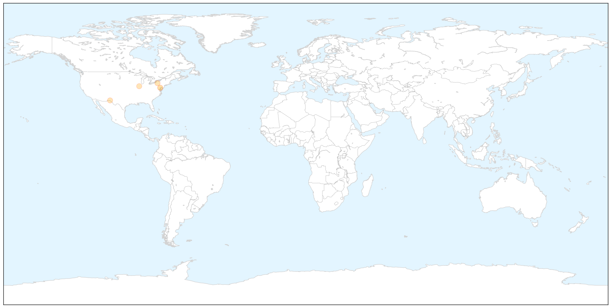

Toggle navigation
Early Warning
Return to Dashboard
Points of Interest
About the Project
West Nile Virus
Aug 27, 2015
Compare to:
-
Dengue Fever
Hemmorhagic Fever
Mold/Fungal Infection
Influenza
Meningitis
Pertussis / Whooping Cough
Middle East Respiratory Syndrome
Cholera
Hepatitis
Chikungunya
Yellow Fever
Bubonic Plague
Swine Flu
Ebola
Measles
Unknown
Mumps
30 Day Trends
Web: 1
alerts
, 0
warnings
Twitter: 0
alerts
, 0
warnings
Top Articles:
0.896
Discovery of a Livingston crow killed by West Nile Virus shouldn't be cause for worry
0.850
Health department says mosquito WNV virus up 140 percent
0.843
First West Nile virus-related death of 2015 for El Paso County
0.674
First West Nile Virus Case in Baltimore County
0.643
Health department urges residents to be vigilant against mosquitos
0.511
Baltimore County Reports 1st Case of West Nile Virus in 2015 « CBS DC
Top Tweets:
No tweets found for Aug 27, 2015
Web/News Articles
X
Tweets
X
Article Locations
X

Article Confidences
X